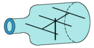
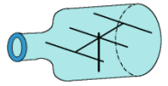

Antenna Modeling Programs
Antenna Modeling ProgramsMost of the software listed here is old, or no longer exists. Where possible internet web archive copies of websites have been found and linked for sites that no longer exist. Currently the most commonly used modeling software in amateur radio circles is EZNEC, 4NEC2, and MMANA-GAL.
As of 2024 the current version of NEC is NEC-5 (EZNEC 7 supports NEC-5), which overcomes most of the shortcomings with earlier codes. It permits the modeling of underground radial systems, elements of varying diameter sections, carefully-constructed close-spaced parallel wires, as well as all the modeling capabilities of earlier versions of the code. NEC-4 and NEC-5 is a proprietary code of the Lawrence Livermore National Laboratory and the University of California, from whom a user-license must be obtained. Export restrictions may apply. You may obtain the license materials on line at the LLNL site.
Cebik created and made available a number of models throughout the site using NEC-Win Plus+. Version 1.2 download: NWPlus-Setup12.zip.
NEC-Win Synth is used to generate typical models and provides a set of building blocks to build more complex models. Version 1 download: NWSynth.zip.
Windows Help: Opening the help on Windows Vista or later may result in an "Feature not included" error. KB917607 for Windows Vista, 7, and 8 can be downloaded from archive.org/download/kb917607 which will enable the help file feature.
The installers have been scanned with Virustotal, no security vendors and no sandboxes flagged the files as malicious.
The Nitany Scientific site also has a number of example model files which can be downloaded from www.nittany-scientific.com/examples/examples.htm (web.archive.org).
Much of my antenna research work is based on systematic antenna modeling in one or another version of the Numerical Electromagnetics Code (NEC). The following brief notes will provide links to known antenna modeling software providers.
At present, I know of only two sources of commercial software for NEC-4:
Roy Lewallen, W7EL produces EZNEC Pro, which has an option for NEC-4, if the purchaser has a confirmed license for NEC-4. EZNEC Pro and EZNEC Plus are also available for NEC-2 (see below). W7EL also makes available EZNEC (v. 4.0), a segment-restricted version of NEC-2. The latest W7EL NEC software packages are Windows-based and employ similar user interfaces which have earned praise in DOS versions for their user-friendliness. New versions of EZNEC contain a 3-D plot graphic that can be "sliced" for select 2-D patterns, direct entry for trap as well as for series and parallel R-L-C loads, and the average gain test. EZNEC also implements the NEC2/NEC-4 ground wave (RP1) output. Wire construction freatures are limited to GW commands, but include special facilities for creating rectangular wire grids, radial systems, circles, and helices. EZNEC Pro will import or export files in .NEC format. Special processing has increased the segment limit to 20,000.
Nittany Scientific (web.archive.org) produces a 32-bit Windows version of NEC-4 called GNEC. This program implements all all of the input cards of the complete NEC-4 input deck, thus permitting the use of catenary wires, helices, networks, rotational and linear structure movement, and coordinate and rotational based symmetry options. Control commands include the insulated sheath, near fields in both coordinate and axial form, the upper medium, as well as far-field and ground wave analysis. Output capabilities include 3-D, polar plots, and many rectangular (X-Y) graphs, as well a a large array of tabular reports and the Average Gain Test. A special insert using the NEC-Win Plus interface allows modeling by equation. The basic ASCII interface uses assist screen to formulate each command entry and is similar to the one used in NEC-Win Pro, described below under NEC-2.
Nittany Scientific (web.archive.org) produces a Windows version of NEC-2 called NECWin Plus, which features a true spreadsheet geometry construction page set with design-by-equation capabilities. The program also offers stepped-diameter corrections, Gain Averaging Test, CAD (.DXF) file input, 2-D and 3-D plots and antenna views, and graphical outputs. NSI considers this to be an entry level program and offers a companion volume with exercise models called Basic Antenna Modeling: A Hands-On tutorial.
The company also offers a research NEC-2 program: NECWin Pro (NWP). NWP employs a user-selected choice between a spreadsheet geometry construction page (adapted from NEC-Win Plus, or the normal ASCII model input page with help screen/windows for all antenna model input parameters. In addition, NWP provides direct entry or importation of NEC model inputs and provides a large assortment of available rectangular output graphics, along with other advanced NEC capabilities. NSI views NEC-Win Pro as a profession-level program.
Recently added to NSI offerings is NEC-Win Synth, a program to synthsize wire-grid structures for use in any NEC (-2/-4) program. The user may select a preset shape and enter critical dimensions or synthsize a structure with the spreadsheet entry facility. NEC-Win Synth can be directly linked to NEC-Win Plus or save its output in a standard .NEC file.
EZNEC for Windows, both in basic and professional versions, is available from Roy Lewallen. See the general description of EZNEC/ELNEC products under NEC-4 above. EZNEC 4.0, the basic version of the NEC-2 programs, offers 3-D plots with 2-D slicing, ground-wave output, stepped diameter correction, and numerous short-cuts to antenna geometry modification. As well, there are new facilities for entering traps and considerable annotation capabilities. Standard EZNEC is restricted to 500 segments. EZNEC Plus offers additional wire construction and movement capabilities, along with a 1500-segment limit. EZNEC Pro M offers all of the features of EZNEC Pro/4, with the exception of being limited to the use of NEC-2.
NEC2GO, a general purpose Nec-2d interface to Windows, is available from Nova Plus Software. It provides "Modeling by Equation," sweeping of variables, and support for Coax and Ladder Line feedlines to show impedance transformation and loss. Features include unlimited segments, sources, and loads, shifting and rotating wire definitions, automatic segment generation and Tapering, Auto Gain Test and Average gain, quick convergence testing, automatic creation of plots at max gain angles, LAPACK routines, all NEC ground options, and NT-based feedpoint matching networks. The program is fully Windows compliant with no DOS executables. A free Demo Version is available.
4NEC2 is a no-cost experimental version of NEC-2, with continuous development of its facilities and interface by its programmer, Arie Voors. Since the program changes with regularity as Arie introduces new features, such as improvements to the user interface and an optimizer, a detailed description is not feasible here. The program can be downloaded freely from the unofficial NEC Archives (see below).
Antenna Solver is a product of Grating Solver Development Co. that uses NEC-2 as rewritten into C++ using dynamic array allocation. The user interface, graphical editing features, and data display capabilities allow analysis of antenna patterns, of near, far, and ground-wave fields, as well as currents and charge densities. A full-featured version of the program can be downloaded in the "DEMO" mode for 30-day use, after which the purchase of a password will be needed to permanently enable the program.
Poynting Software (web.archive.org) is making available version 2.5 of its hybrid NEC-2/UTD program "SuperNEC," which is implemented in C++. The program has a parallel execution option. It makes use of MatLab 5.2 to run the program and avails itself of MatLab's many input and output facilities, such as the use of MatLab language assemblies that users may add to or modify. A version (SuperNEC Lite) which is restricted to 300 segments and 3 GTD objects is available at a student price, and a demo is available at the web site.
EM Software and Systems (http://www.emss.co.za/wiregrid/default.htm not found in web.archive.org) produces a specialized user interface for NEC called "WireGrid." The program is a graphical user interface that automates the process of creating surfaces via wire meshes, while providing visual feedback on the structure, sources, networks, and field points. A demonstration version of the program can be down loaded from the EMSS web site.
EM Scientific (web.archive.org) offers several levels of Expert MININEC Professional, ranging from the basic level MININEC for Windows to MININEC Broadcast Professional. The product-level distinctions include the number of segments and unknowns available; advanced features of geometry, electrical, and solution description; and auxiliary calculations. These are all Windows products.
Antenna Model (web.archive.org), (from Teri Software) which first appeared in a DOS version in 1992, has returned with an advanced Windows version of MININEC based on 3.13. Wholly reprogrammed, the core has virtually unlimited segment capacity for models and uses revised (and sometimes alternate) algorithms to overcome MININEC difficulties with errors with increasing frequency, angular junctions, wire junctions less than 28 degrees, and wires spaced closer than 0.23 wavelengths. The program offers both 2-D and 3-D patterns, and a variety of supplemental calculating features, for example, inductor calculations that include leads and distributed capacitance and matching networks including gamma, Tee, and beta (or hairpin). The program also permits for each wire separate values of conductivity and permeability, and it is able to import successfully a wide range of model files in .nec format.
Orion (web.archive.org) of Canada offers a Windows95/98/NT 32-bit version of MININEC, NEC4WIN, using a spreadsheet geometry input page, pull down boxes for other antenna parameters, and a pattern plotting output that includes lobe identification and bandwidth. In addition, the user can vary the height of the antenna without invoking a complete recalculation of the matrix for faster results. Recent upgrades include 3-D patterns, and optimization routines. The VM (virtual memory) version of the program permits almost unlimited numbers of segments in a model.
MMANA, version 0.5E (English language), is available as freeware from VK5KC's "MMHamsoft" website. Based upon public domain MININEC, the program offers a large segment (pulse) capacity because the author, JE3HHT, Makoto Mori, has placed the program in a Windows framework using C++. The program offers advanced features such as segment length tapering, optimizing, and network calculation, but lacks some basic features, such as assigning a user-specified material conductivity or resistivity to the model wires, frequency compensation, or close-wire compensation. However, the price (no-cost) is excellent, although there is no customer support for the package.
NEC-BSC (web.archive.org), the NEC-Basic Scattering Code (and its "workbench") and other MoM-related software (including EM Surface Patch Code, Reflector Antenna Code, and Aircraft Code) are available (at about $300 per package) from the Ohio State ElectroScience Laboratory.
Ansoft Ensemble (web.archive.org) offers planar EM simulation software for RF and wireless design, providing s-parameters and full wave fields using MoM methods. The software is applicable to microstrip and planar microwave structures, including antennas and transmission line applications. A limited-function student version is available as a free download.
EMMCAP (web.archive.org) is a user-oriented 3D "Curved" MoM software for the modeling of arbitrarily shaped wire structures and for the computation of their electromagnetic behavior, including radiation and scattering problems. The code is based in a Method of Moments formulation with curved segments. It is intended for solving problems in the areas of antenna analysis and design, EMC applications, transmission lines and nonradiating networks. The modeling of the structure can be performed by means of the EMMCAP specific 3D-tools. System responses can be computed in a frequency sweep and plotted in 2D and 3D graphical representations.
ASAP, Antenna Scatterers Analysis Program--originally developed by J. W. McCormack and made available as free downloadable software in the FORTRAN source code and PC executables by R. L. Cross--is a method-of-moment antenna analysis program with a "more English-like" input system.
MOMIC, made available without cost by Professor Andrzej Karwowski of the Silesian Technical University in Gliwice, Poland. MOMIC is a Method of Moments Interactive Code for numerical modeling of arbitrary thin-wire radiating and scattering structures in free space.
Polar Plot (web.archive.org) is a program for the Windows 95/98 environment that uses the audio capabilities of the PC and a receiver to allow the user to generate a polar plot of his antenna. The program was developed for Windows by Bob Freeth, G4HFQ.
Arbitrary Transmission Line Calculator is a suite of programs in C developed for the analysis and design of electrical transmission lines and directional couplers of totally arbitrary cross section. By analysis, it is assumed one requires to find the electrical properties of a transmission line or coupler, where the physical dimensions of the device are known. By design, it is assumed one requires a transmission line or coupler to have certain electrical properties and one wishes to find how to physically realise such a structure. The software is under general public license.
ASL Antenna Software Ltd (web.archive.org) of Great Britain offers a range of specialized antenna software.
CEMTACH (web.archive.org) offer specialized computational EM simulation services and software.
The sources listed above have web pages for further information on the relevant software. Brian Beezley, K6STI, also has until recently offered a wide range of NEC-related software, as well as a Yagi optimization program, a terrain analysis program, and DSP software. Contact the author via mail, since the most recent e-mail address (k6sti@n2.net) may no longer be active.
These listings do not include a considerable array of hybrid modeling programs (with the exception of Ensemble) that make use of multiple techniques--many, but not all, MoM based--to model circuitry (usually derived from PSpice lists or outputs), transmission lines, and antennas (including flat surfaces and substrates). Some are compatible with AutoCAD outputs for direct graphic-to-model links. Virtually all of the advanced versions of these programs are proprietary and expensive compared to NEC offerings. However, for many aspects of UHF and EHF design, they be the proper programs of choice.
The (Unofficial) NEC Archives (web.archive.org) are maintained by Ray Anderson, WB6TPU. Formerly, this collection of NEC-related software has been available only via FTP. However, the entire contents are now accessible via the web. They include many source codes for NEC and for pre- and post-processing of NEC, along with some sample input files. Another valuable website of NEC-2 information (web.archive.org) was originated by Peter Richeson and is now maintained by Nittany-Scientific.
There are several self-study modeling courses available. ARRL offers Antenna Modeling in its Continuing Education Series. The 30-lesson course uses EZNEC and NEC-Win Plus to introduce basic modeling concepts, techniques, and limitations related to NEC-2. The volume and the exercise models are available independently of the tutored educational program for self-study purposes. An alternative tutorial geared to NEC-Win Plus is Basic Antenna Modeling: A Hands-On Tutorial.
For more advanced users of NEC-2 and NEC-4, NSI is releasing Intermediate Antenna Modeling: A Hands-On Tutorial. This self-study volume encompasses virtually the entire command sets for both cores, including details of command revisions in the transition between NEC-2 and NEC-4. The 450-page volume includes about 300 exercise models in .NEC format. Although geared to the cores used by NSI (NEC-Won Pro and GNEC), the volume is useful with almost any version of NEC-2 or NEC-4.
To examine some of the differences among the NEC and MININEC offerings, see QEX, for Sep/Oct, 2005, and Nov/Dec, 2005. The 2-part series text and graphics provide an overview of significant user differences among programs, many of which appear in the above listing. It can be interesting to compare this overview to an earlier version that appeared in QEX, Mar/Apr, 1998. The differences will show the rate of change and of development in the field of antenna modeling software.
There are--for many reasons--no instructional manuals for MININEC of the scope and independence of the self-study course for NEC. Software instruction manuals or "help" compendiums may be the best source of instruction. However, you may wish to get started by looking back to "A Beginner's Guide to Using Computer Antenna Modeling Programs," from The ARRL Antenna Compendium, Volume 3, reprinted in Vertical Antenna Classics.
For more details on the use of commands, the limitations of various NEC and MININEC programs, and numerous work-arounds, see the Antenna Modeling series that appears monthly in antenneX. You can freely view past columns (at this site in the Antenna Modeling series).
This listing is necessarily limited. However, the indicated web pages will lead you to other information on details, specifications, related developments, and a more complete understanding of the rapidly expanding field of electromagnetic modeling. However, as with all software information, development efforts quickly outrun written accounts.
Updated 03-10-2008. © L. B. Cebik, W4RNL. Data may be used for personal purposes, but may not be reproduced for publication in print or any other medium without permission of the author.